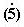

THE HOLISTIC PARADIGMS
MATRIX PATTERNS
Ben Bayer
Adelaide, Australia
Abstract.
This paper makes a holistic move in addressing the Matrix potential for
examining word/meaning relationships so essential to effective communication
and to all related thinking processes. It displays a complete set
of dominant paradigms covering the whole Matrix landscape. The Matrix,
a conceptual framework which integrates the four elements feel/think/act/time
into a single holistic landscape of values and entities, provides the all
inclusive background which the set of displayed paradigms fully covers.
The word paradigm
captures the need to retain appropriate flexibility in dealing with word/meaning
relationships. The definition, etymology as well as the current usage
of paradigm provide some protection against a partial, biased, non-holistic
interpretation of key words. The Matrix expression for paradigms is a radical
with zero fractal which combines identity with flexibility.
Each of the selected
paradigms represents a basic key word or entity. The complete paradigm
set is grouped in 5 visual displays which both separate the structural
Matrix components and dovetail into each other. The main focus is visualisation
and completeness.
Visual displays offer
a very valuable methodology for presenting ideas and concepts which can
influence ways of thinking. They operate in line with the well established
notion that seeing is believing, adding that visual exposure will always
give common sense a better chance to prevail. Apart from visual displays
for the main title, a number of supportive displays are given illustrating
the pattern configuration of Matrix projections and their ability to identify
and separate values by polarity, thereby enhancing and promoting positive
choices. In this regard, the holistic approach is seen as a mathematical
enhancer leading to valuable breakthroughs.
1. Introduction
This paper takes another step in exploring the Matrix potential for examining word/meaning relationships so essential to effective communication and to all related thinking processes. It considers a complete set of dominant paradigms covering the whole Matrix landscape.2. The holistic frameworkThe selected paradigms represent basic key entities. The complete set is grouped in 5 visual displays which both separate the structural Matrix components and dovetail into each other. Visualisation and completeness are the main focus.
Additional visual displays are included to further demonstrate the useful and coherent power of separation between and within various key entities when projected on the Matrix landscape.
The Matrix provides the conceptual framework within which all concepts and entities are projected. It is a framework which integrates the four elements feel/think/act/time into a single holistic landscape of values and entities, allowing visualisation of conceptual notions and relationships graphically and numerically. Of modular construct with decimal continuity, it forms a universal framework accommodating conceptual totality and functional flexibility.3. The Matrix Dominant ParadigmsA 4-page Matrix Statement giving details of the Matrix construction, its rationale and a number of associated corollaries is readily available. It can be downloaded from the Internet, Web site http://www.ozemail.com.au/~bayerben/
2.1 Matrix expressions
They are numerical codes allocated to concepts and entities, in accordance with perception, to achieve the best fit on the Matrix landscape.
The decimal point in the expression separates the “Radical” on its left which is the selected starting position, from the “Fractal” on its right which is the decimal emphasis representing the direction of change.
For example, leadership (59.86) and consensus (59.75) share the radical 59 (choice/optimisation) but differ in the decimal emphasis, 86 (design) and 75 (reason) respectively.
The determination of a Matrix expression relating to an entity gets its validation from tests of perception (25.45), equivalence (55.383/55.386) and coherence (49.55). For this reason, the Matrix expressions presented in this paper should be considered as a first draft, open to and inviting debate.
The word paradigm is chosen because it seems to capture the need to retain appropriate flexibility in dealing with word/meaning relationships. The definition and etymology of paradigm include the words: example, pattern, underlying, inflexion, for and against. Its current usage appears to provide some protection against a partial, biased, non-holistic interpretation of key words.4. The Square and the CircleThe Matrix expression for paradigms is a radical with zero fractal. It combines identity with flexibility. When fractals are added to the paradigms, new entities are formed with new identity at further levels of complexity.
3.1 The First Tier (visual display 1)
3.2 The First Stage (visual display 2)
11.0 The edge
11.0 Isolation
12.0 Suppression
13.0 Hurt
14.0 Ego
15.0 Vigilance
16.0 Renewal
17.0 Intimacy
18.0 Decency
19.0 Purity41.0 Weak
42.0 Deprived
43.0 Struggle
43.0 Gender
44.0 Roots
45.0 Acceptance
46.0 Effort
47.0 Relationship
48.0 Interest
49.0 Belief71.0 Self Indulgence
72.0 Self Interest
73.0 Fun
74.0 Alter Ego
74.0 Investment
75.0 Reason
76.0 Contribution
77.0 Empathy
78.0 Care
79.0 Love
3.3 The Second Tier (visual display 3)
11.0 The edge
11.0 Isolation
12.0 Suppression
13.0 Hurt
14.0 Ego
15.0 Vigilance
16.0 Renewal
17.0 Intimacy
18.0 Decency
19.0 Purity21.0 Fear
21.0 Uncertainty
22.0 Darkness
23.0 Error
24.0 Message
25.0 Logic
26.0 Bid
27.0 Opinion
28.0 Presentation
29.0 Validation31.0 Mistake
32.0 Disregard
32.00 Excess
33.0 Aggression
34.0 Separation
35.0 Protection
36.0 Expression
37.0 Request
38.0 Consultation
39.0 Negotiation
3.4 The Second Stage (visual display 3)
21.0 Fear
21.0 Uncertainty
22.0 Darkness
23.0 Error
24.0 Message
25.0 Logic
26.0 Bid
27.0 Opinion
28.0 Presentation
29.0 Validation51.0 Regression
52.0 Observation
53.0 Interpretation
54.0 Retention
55.0 Balance
55.00 Comprehension
56.0 Attitude
57.0 Partnership
58.0 Right
59.0 Optimisation81.0 Myth
82.0 Search
83.0 Complexity
84.0 Information
85.0 Opportunity
86.0 Design
87.0 Belonging
88.0 Light
88.00 Truth
89.0 Values
3.5 The Third Stage (visual display 4)
41.0 Weak
42.0 Deprived
43.0 Struggle
43.0 Gender
44.0 Roots
45.0 Acceptance
46.0 Effort
47.0 Relationship
48.0 Interest
49.0 Belief51.0 Regression
52.0 Observation
53.0 Interpretation
54.0 Retention
55.0 Balance
55.00 Comprehension
56.0 Attitude
57.0 Partnership
58.0 Right
59.0 Optimisation61.0 Trail
62.0 Cope
63.0 Fight
64.0 Administration
65.0 Ability
65.0 Management
66.0 Power
67.0 Alliance
68.0 Skill
69.0 Status
3.6 The Third Tier (visual display 5)
71.0 Self Indulgence
72.0 Self Interest
73.0 Fun
74.0 Alter Ego
74.0 Investment
75.0 Reason
76.0 Contribution
77.0 Empathy
78.0 Care
79.0 Love81.0 Myth
82.0 Search
83.0 Complexity
84.0 Information
85.0 Opportunity
86.0 Design
87.0 Belonging
88.0 Light
88.00 Truth
89.0 Values91.0 Miss
92.0 Stumble
92.0 Quantum
93.0 Win
94.0 Assets
95.0 Quality
96.0 Accomplishment
97.0 Kindness
98.0 Worth
99.0 Vision
3.7 The Matrix Dominant Paradigms tabulated (visual display 5a)
31.0 Mistake
32.0 Disregard
32.00 Excess
33.0 Aggression
34.0 Separation
35.0 Protection
36.0 Expression
37.0 Request
38.0 Consultation
39.0 Negotiation61.0 Trail
62.0 Cope
63.0 Fight
64.0 Administration
65.0 Ability
65.0 Management
66.0 Power
67.0 Alliance
68.0 Skill
69.0 Status91.0 Miss
92.0 Stumble
92.0 Quantum
93.0 Win
94.0 Assets
95.0 Quality
96.0 Accomplishment
97.0 Kindness
98.0 Worth
99.0 VisionThis display conveniently tabulates all the Matrix Dominant Paradigms. It groups and relates at a glance the Paradigms for all the Tiers and Stages.
On the Matrix, the circle inscribed in a square shares its centre and the equivalence potential attached to it. Viewed from this central point5. The arrow of time
, the circle is the Observer's "local horizon".
One element of basic import when considering equivalence is the direction (or arrow) of time. For instance regression (51.0) refers to a perception of moving back in time while elsewhere the time flows on.6. Visual Displays (All displays can be accessed at the Web site given in Section 2)Polarity, the notion of perceived positive and negative, is obviously linked (among other factors) to the direction of time flow. The more complicated the situation, the higher the potential for controversy about the sign of polarity in that particular situation..
1. Matrix Dominant Paradigms , First Tier7. Conclusion
2. " " " , First Stage
3. " " " , Second Tier / Second Stage
4. " " " , Third Stage
5. " " " , Third Tier
5a. " " " , tabulated
6. The Broad Divisions
7. Achievement determinants
8. Behaviour determinants
9. Energy: the Vertical thrust
10. Intelligence: the Horizontal pull
11. Interactive social groups
12. From Perception to Choice
13. Information handling
14. Tooling up benefits
15. Approval v/s Disapproval
16. Priorities
17. Three golden Beliefs
18. Real v/s Virtual
19. Misguided passion
20. Reality, Potential, Propensity
21. Vision, Ideology, Metricity
22. Partnership
23. May and Can
24. Fear / Failure v/s Hope / Success
The 90 paradigms presented as providing a full coverage of the Matrix are qualified as dominant. They form a holistic set of basic entities defined by perception, which recognise polarity, equivalence and coherence. These entities combine with each other to form further entities captured by more complex Matrix expressions containing radicals and fractals.8. ReferencesThe object of this tooling up is the convenience of a universal short hand to communicate objectively across cultural groupings without the word/meaning relationships causing hindrance but rather promoting enhancement to the thought processes and the problem solving optimisation.
The visual displays provided also facilitate open debate about universal values at the value level. The very wide acceptance of value levels confirms that polarity is a fact of life. Thinking must be encouraged into rejecting regressive modes and engaging in progressive pathways. This is not a new thought but well worth remembering at the start of the new Millennium.
Finally it is felt that the holistic approach is a mathematical enhancer leading to valuable breakthroughs . It helps provide not only windows of opportunity but also gates of delivery – hopefully for the benefit of all mankind.
The following short selection stands for both acknowledgement and reference:
1. Stephen Hawking: A brief history of time (1989)
2. Paul Davies: The mind of God (1992)
3. Edward de Bono: Simplicity (1998)